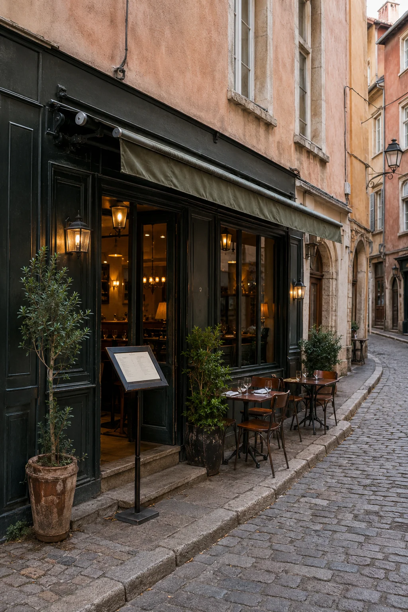

Analyse de votre projet
Nous échangeons sur votre restaurant, votre clientèle, votre fonctionnement et les fonctionnalités dont vous avez besoin.
Restaurant
Donnez envie de réserver avant même que vos clients franchissent votre porte. Central Web Agency conçoit un site professionnel qui met en valeur votre cuisine, votre carte et l'identité de votre établissement, tout en facilitant la réservation et la prise de contact. Une présence en ligne claire, rapide et pensée pour votre restaurant.

Vos défis au quotidien
Votre cuisine peut être excellente, mais encore faut-il que les clients vous trouvent, comprennent votre concept et aient envie de réserver. Entre les plateformes, les réseaux sociaux, les avis et la concurrence locale, votre présence numérique influence directement la première impression donnée par votre établissement.
Sans site bien structuré, vous laissez une partie de votre visibilité aux annuaires, plateformes et concurrents lorsque des clients cherchent où manger dans votre secteur.
Menu perdu dans une publication, photo illisible ou tarifs introuvables : vos futurs clients doivent pouvoir découvrir rapidement votre cuisine, vos formules et vos informations essentielles.
Répondre au téléphone pendant le service fait perdre du temps. Une réservation en ligne peut simplifier la prise de rendez-vous et centraliser les demandes.
Les clients comparent rapidement plusieurs établissements. Un site soigné permet de montrer votre ambiance, votre cuisine et ce qui rend votre restaurant différent.
Réseaux sociaux et plateformes sont utiles, mais votre site reste votre espace professionnel : vous maîtrisez votre présentation, vos contenus et le parcours de vos visiteurs.
Horaires, adresse, menu, réservation, téléphone, accès ou événements : votre site rassemble les informations dont vos clients ont besoin avant de venir.
La solution
Un restaurant se choisit aussi avec les yeux. Votre site doit transmettre votre univers, présenter votre carte clairement et donner envie de réserver. Il ne s'agit pas seulement d'être présent sur internet, mais de créer une vitrine cohérente avec l'expérience que vous proposez dans votre établissement.
Selon vos besoins, votre site peut rester une vitrine simple et efficace ou devenir un outil plus complet avec réservation, gestion de contenus, base de données ou paiement en ligne. Nous construisons la solution autour de votre fonctionnement réel, sans vous imposer des fonctionnalités inutiles.
Une structure et des contenus adaptés contribuent à améliorer votre visibilité sur les recherches liées à votre restaurant, votre cuisine et votre zone géographique.
Photos, plats, salle, terrasse et identité visuelle donnent immédiatement un aperçu de l'expérience proposée dans votre établissement.
Avec un site dynamique adapté, vos clients peuvent réserver plus facilement et vous réduisez les échanges nécessaires à la prise de réservation.
Vous avez un restaurant et souhaitez améliorer votre présence en ligne ? Parlons de votre projet.
Demander mon devis gratuitPour tous les établissements
Restaurant traditionnel, gastronomique, pizzeria ou établissement spécialisé : votre site est conçu autour de votre cuisine, de votre clientèle et de votre façon de travailler.
Présentez votre cuisine, vos menus, votre histoire et toutes les informations nécessaires pour donner envie de venir à votre table.
Valorisez votre chef, votre univers, vos menus et votre expérience avec une présence numérique à la hauteur de votre positionnement.
Affichez clairement votre carte, vos formats, vos horaires et vos possibilités de réservation, de retrait ou de commande selon votre organisation.
Une navigation rapide sur mobile permet à vos clients de consulter votre offre et d'accéder immédiatement aux actions importantes.
Mettez en avant votre ambiance, vos produits, vos horaires, vos événements et votre emplacement.
Végétarien, cuisine du monde, produits locaux ou concept original : votre site explique clairement votre identité et votre différence.
Ce que votre site peut faire
Votre site peut simplement présenter votre établissement ou intégrer des outils plus avancés. Nous sélectionnons les fonctionnalités selon vos besoins, votre organisation et votre budget.
Présentez vos entrées, plats, desserts, formules, boissons et tarifs dans une mise en page claire, agréable à consulter sur mobile.
Sur un site dynamique, vos clients peuvent demander ou effectuer une réservation directement depuis votre site selon le système prévu.
Selon votre projet, un site dynamique peut intégrer un paiement pour certaines commandes, réservations, acomptes ou prestations.
Un projet dynamique peut prévoir une prise de commande, un retrait sur place ou d'autres parcours adaptés au fonctionnement de votre établissement.
Présentez vos plats, votre salle, votre terrasse et votre équipe pour donner un aperçu concret de l'expérience proposée.
Mettez en avant des témoignages ou dirigez les visiteurs vers vos avis afin de renforcer la confiance autour de votre établissement.
Horaires de service, jours de fermeture, adresse, téléphone et informations d'accès restent faciles à trouver.
Aidez vos clients à localiser votre établissement et à préparer leur venue grâce à une présentation claire de votre adresse et de votre secteur.
Avec un site administrable, vous pouvez disposer d'une interface prévue pour modifier certains contenus selon le périmètre défini au projet.
Présentez vos soirées, menus spéciaux, groupes, événements privés ou possibilités de privatisation.
Reliez votre site à Instagram, Facebook ou vos autres réseaux pour faire circuler les visiteurs entre vos différents supports.
Centralisez les demandes générales, groupes, événements ou privatisations grâce à un formulaire adapté.
Vous hésitez entre une simple vitrine et des fonctionnalités avancées ? Nous vous conseillons gratuitement.
Être conseillé gratuitementQuelle solution pour vous
Un site vitrine présente votre restaurant, votre carte et vos informations essentielles. Un site dynamique va plus loin avec une base de données et des fonctionnalités comme la réservation, le paiement, la commande ou une interface d'administration.
| Critère | Site vitrine | Site dynamique |
|---|---|---|
| Idéal pour | Présenter le restaurant et générer des contacts | Ajouter réservation, paiement ou gestion avancée |
| Présentation de votre établissement | ||
| Carte, menus et informations | ||
| Réservation en ligne intégrée | ||
| Commande ou click & collect sur mesure | ||
| Paiement en ligne | ||
| Base de données et administration | ||
| Tarif de création | À partir de 450€ TTC | À partir de 2 500€ TTC |
| Abonnement obligatoire | Non | Non |
| Maintenance optionnelle | À partir de 39€/mois | À partir de 99€/mois |
| Délai indicatif | 1 à 3 semaines | Selon les fonctionnalités |
Quelle que soit la solution choisie, aucun abonnement n'est obligatoire. Un site vitrine, à partir de 450€ TTC, convient pour présenter votre restaurant, votre carte et vos informations essentielles. Un site dynamique et administrable, à partir de 2 500€ TTC, permet d'aller plus loin avec une base de données et des fonctionnalités sur mesure. La maintenance reste entièrement optionnelle : à partir de 39€/mois pour un site vitrine et 99€/mois pour un site dynamique.
Un doute sur la formule à choisir ? Nous analysons vos besoins et vous orientons sans engagement.
Demander conseilNotre processus
De l'analyse de votre établissement à la mise en ligne, vous validez les choix importants. Simple, clair et sans mauvaise surprise.
Nous échangeons sur votre restaurant, votre clientèle, votre fonctionnement et les fonctionnalités dont vous avez besoin.

Nous imaginons la structure et l'univers visuel de votre site, puis vous validez la maquette avant le développement.

Après validation, nous développons votre site et intégrons vos contenus, vos photos, votre carte et les fonctionnalités prévues.

Nous vérifions le bon fonctionnement sur les différents écrans, puis nous publions votre site et organisons sa prise en main lorsque nécessaire.
Nos tarifs
Site vitrine pour présenter votre établissement ou site dynamique pour intégrer des fonctionnalités avancées : choisissez la solution adaptée à vos besoins. Dans les deux cas, aucun abonnement n'est obligatoire.
Prix TTC — TVA non applicable, art. 293B du CGI
Site vitrine
Une présence professionnelle pour présenter votre restaurant, votre carte et vos informations essentielles. Paiement unique et aucun abonnement obligatoire.
Site dynamique & administrable
Une solution avec base de données et fonctionnalités avancées conçues autour du fonctionnement de votre restaurant. Paiement unique et aucun abonnement obligatoire.
La maintenance est facultative.
Si vous souhaitez nous confier l'hébergement, la maintenance, les mises à jour et l'accompagnement, nos formules débutent à 39€/mois pour un site vitrine et 99€/mois pour un site dynamique. Vous restez libre de choisir cette option ou non.
Notre différence
Chaque restaurant possède son identité. Nous concevons votre site sur mesure autour de votre établissement, de votre clientèle et de vos objectifs, avec un accompagnement humain du premier échange jusqu'à la mise en ligne.
Un interlocuteur à l'écoute pour comprendre votre établissement et vous guider dans les choix utiles à votre projet.
Votre site reflète votre cuisine, votre ambiance, votre identité et votre positionnement.
Structure technique, balises et contenus sont travaillés pour offrir de bonnes bases de référencement à votre site.
Votre carte et vos informations restent faciles à consulter sur smartphone, tablette et ordinateur.
Votre site clé en main vous appartient, sans abonnement de maintenance imposé.
Selon sa conception, votre site peut évoluer avec votre restaurant et accueillir de nouvelles fonctionnalités.
Après la livraison, nous restons joignables pour vous accompagner selon les modalités prévues.
FAQ
Une question sur votre futur site, nos tarifs ou le déroulement du projet ?
Poser ma questionUn site vitrine clé en main démarre à partir de 450€ TTC. Un site dynamique et administrable avec base de données et fonctionnalités avancées démarre à partir de 2 500€ TTC. Dans les deux cas, aucun abonnement n'est obligatoire.
Un site vitrine est généralement livré entre 1 et 3 semaines. Pour un site dynamique, le délai dépend des fonctionnalités et vous est précisé dans le devis avant le démarrage.
Oui. Un site dynamique peut intégrer un système de réservation adapté aux besoins définis pour votre restaurant.
Oui. Votre site peut présenter votre carte, vos menus, formules, tarifs et informations utiles dans une mise en page claire et adaptée au mobile.
Oui, dans le cadre d'un site dynamique adapté. Selon votre projet, nous pouvons prévoir des fonctionnalités de commande, de retrait, d'acompte ou de paiement en ligne.
Oui, si votre projet prévoit un site dynamique et administrable. Nous concevons alors une interface de gestion adaptée au périmètre défini. Si vous préférez déléguer la maintenance, une formule optionnelle débute à 99€/mois.
Un site vitrine convient pour présenter votre restaurant, votre carte et générer des contacts. Un site dynamique devient utile lorsque vous souhaitez intégrer une base de données, de la réservation, du paiement, de la commande ou une administration avancée.
Oui. Votre site clé en main vous appartient, qu'il s'agisse d'un site vitrine ou d'un site dynamique. Aucun abonnement n'est obligatoire : les formules de maintenance restent entièrement optionnelles.
Oui. Central Web Agency est basée à Heyrieux, près de Lyon, et peut accompagner des restaurants partout en France grâce à un suivi réalisable à distance.
Vous bénéficiez de 30 jours de retouches offertes sur le périmètre validé. Ensuite, vous pouvez gérer votre site selon les modalités prévues au projet ou choisir une maintenance optionnelle : à partir de 39€ par mois pour un site vitrine et 99€ par mois pour un site dynamique.
Oui. Nous pouvons intégrer vos réseaux sociaux afin de relier votre site à vos autres supports de communication.
La création du site est proposée en paiement unique : à partir de 450€ TTC pour un site vitrine et de 2 500€ TTC pour un site dynamique. Aucun abonnement n'est obligatoire. La maintenance est proposée en option à partir de 39€ par mois pour un site vitrine et 99€ par mois pour un site dynamique.
Prêt à mettre votre restaurant en valeur ?
Une carte claire, une image professionnelle et des fonctionnalités adaptées à votre établissement. Donnez à votre restaurant une présence en ligne à la hauteur de votre cuisine. Devis gratuit et sans engagement sous 24h.
Vous préférez écrire ? Utilisez le formulaire de contact, nous vous répondons rapidement.